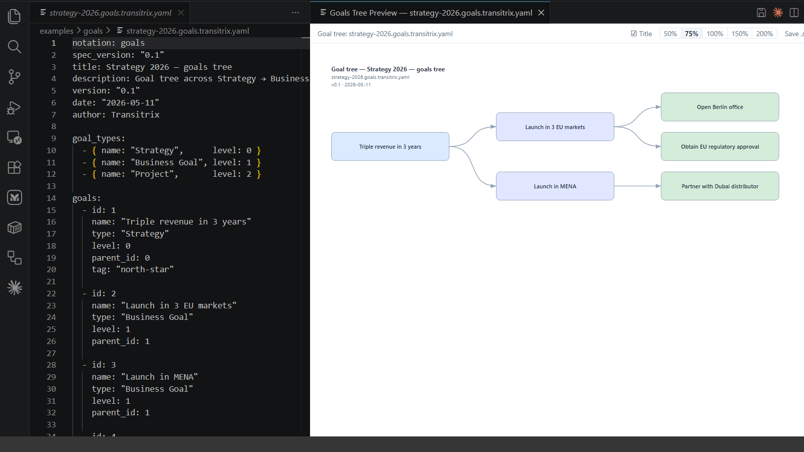

Transitrix
The foundation. A text-native way to model an organisation — goals, processes, capabilities, and structure — as code. Says how to describe an enterprise so it remains readable, versionable, and executable.
View on GitHub →Architecture-as-Code for the enterprise. Transitrix brings the text-first, git-native discipline up to the strategy, business, and EA layers that code-native architecture tools never reach — grounded in ArchiMate, built for the business layer, one formal model projected across every architectural layer from a single source of truth.
An open research initiative working toward the autonomous organisation — where strategy, processes, and capabilities are modelled as text and remain legible enough that humans and machines can act on them together.
Organisations struggle to remain coherent as they grow. Strategy documents drift from reality. Processes live in people's heads or siloed tools. When conditions change, adaptation is slow — because the enterprise is not legible enough to change quickly.
The thesis behind Transitrix is simple: if you can describe your enterprise as text — goals, processes, capabilities, roles — you have a foundation that both humans and machines can read, version, and act on. Text is honest, diffable, and composable. We call this Architecture-as-Code.
Transitrix is an open research initiative exploring how far the text-native enterprise idea can go. The methodology and Transitrix Studio are public; the work continues through open development and early-adopter pilots.
Two units are open today. Two more extend the same thesis.
The foundation. A text-native way to model an organisation — goals, processes, capabilities, and structure — as code. Says how to describe an enterprise so it remains readable, versionable, and executable.
View on GitHub →The unified editor extension and CLI to author and preview Transitrix formats — the reference implementation of the methodology. Previews the full Transitrix notation set, from BPMN process diagrams and goal trees to capability maps, FGCA, and process blueprints, with live preview as you type.
Install →Dynamic strategy management that operates on the Transitrix model — updating as the enterprise model changes. Future commercial flagship. Not yet publicly available.
A research platform for modelling what agents do inside a Transitrix-described enterprise. The behaviour layer of the stack. In narrative; not in active development in the next six months.
A few lines of text become a diagram you can read, review, and version. You author a Transitrix file in VS Code; the preview renders alongside it as you type.

You describe your enterprise once, as text. Two editor extensions render that single model across every layer — so the same source serves the boardroom and the codebase.
Built on open standards — ArchiMate 3.2 and BPMN 2.0 — with everything as plain, diffable text. Nothing is locked in: the technical views are standard Mermaid, and your files stay readable with or without our tooling.
Both the methodology and Transitrix Studio are public. The methodology specification lives at github.com/transitrix/methodology. Transitrix Studio — an editor extension and CLI — installs into VS Code, Cursor, VSCodium, Windsurf and IntelliJ IDEA; see the install options. Source at github.com/transitrix/transitrix-studio.
If you are evaluating Transitrix for a pilot or want to follow the work, reach out at hello@transitrix.com.